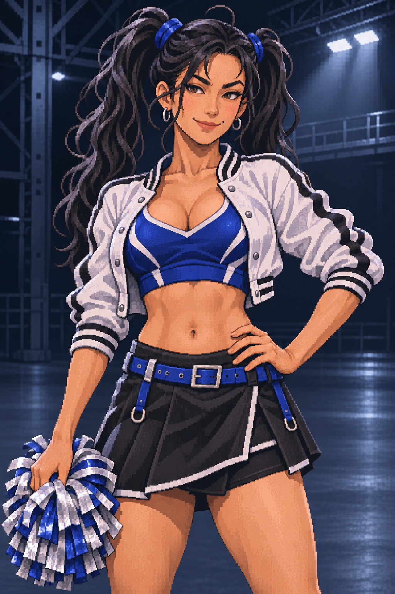
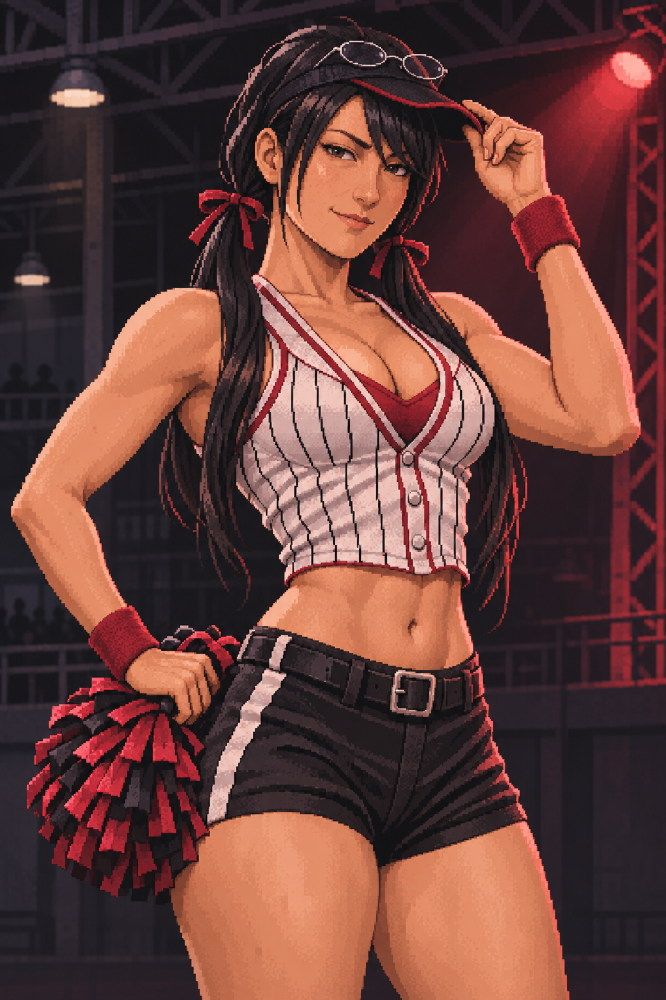
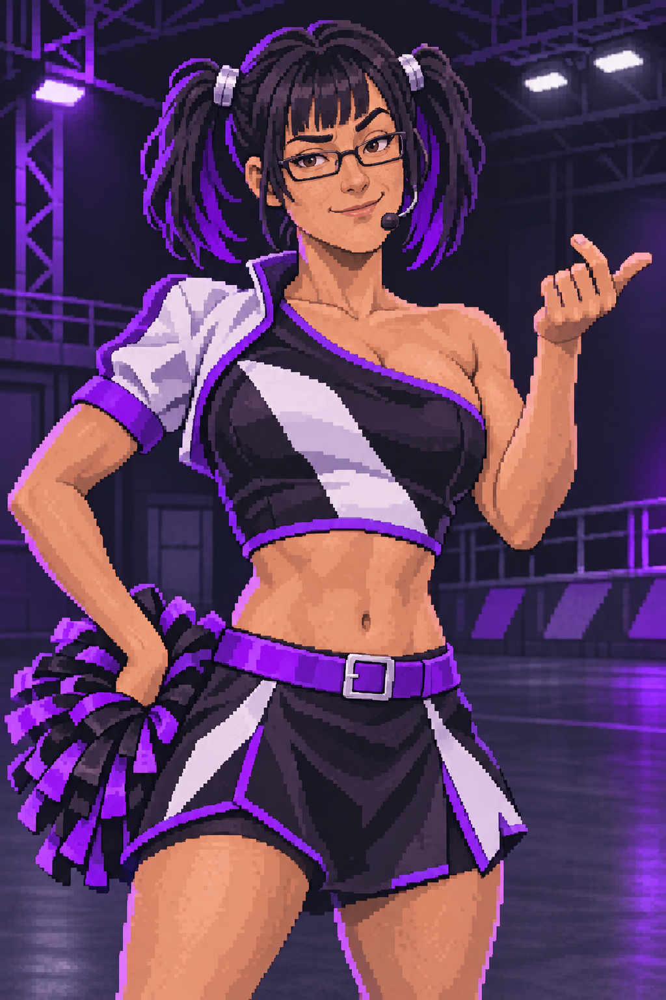

1 — Cobalt
Sportive, expansive, taquine. Veste blanche et longues couettes ; gros contrastes lisibles.

Proposition de personnage : développeuse logicielle et danseuse de stade à temps partiel. Trois directions de costume et de personnalité à départager avant la création des sprites de jeu.
Sportive, expansive, taquine. Veste blanche et longues couettes ; gros contrastes lisibles.

Capitaine de spectacle, assurée, compétitive. Rayures de baseball, visière et couettes basses.

Chorégraphe précise, ironique et théâtrale. Silhouette asymétrique, lunettes et couettes courtes.

Idée de caractère : elle conçoit les trajectoires comme une chorégraphie. Très expressive face au public, elle devient immobile et concentrée lorsqu’elle calcule son prochain coup.
Les proportions et la grille de pixels de la proposition retenue seront adaptées au portrait du jeu. Prompts imagegen · Fukuoka : guide gastronomique officiel